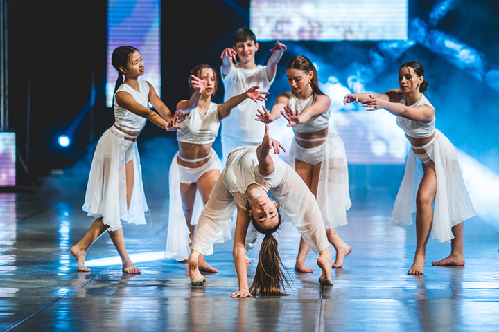

CONTEMPORERY
Co je to contemporery?
Moderní scénický tanec (Contemporary dance) je moderní výrazový tanec,
který je vzhledem ke své technické podobnosti přirovnáván k modernímu tanci
a baletu. Contemporary dance je velmi nepředvídatelný a zcela odlišný od
ostatních tanců. V této formě tance se velmi často objevují nepředvídatelné
změny v rytmu, rychlosti a směru.

Charakteristika tance
Historie tance
Taneční techniky